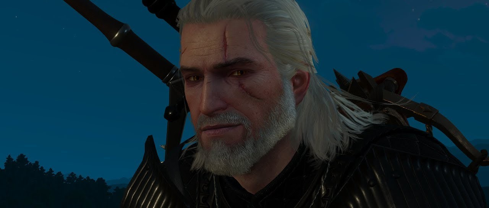

The Witcher 3: Wild Hunt é um RPG de mundo aberto que te coloca no papel de Geralt de Rívia, um bruxo solitário em busca de sua filha adotiva, Ciri. A Caçada Selvagem, um exército de espíritos, também está à procura de Ciri, e uma intensa jornada se inicia. Com uma experiência épica que te levará a uma jornada inesquecível. Se você busca um RPG com um mundo rico, uma narrativa envolvente e combates emocionantes, este é o jogo perfeito para você.
Já se aventurou no mundo de The Witcher? Uma saga épica que te leva por reinos medievais, florestas encantadas e cidades vibrantes. Acompanhe Geralt de Rívia, um bruxo solitário, em sua jornada para encontrar Ciri, a princesa do destino. Prepare-se para um mundo cheio de monstros, magia e escolhas difíceis. Qual sua casa de bruxaria favorita?
Na atualização para a nova geração de The Witcher 3: Wild Hunt, descubra um novo conteúdo inspirado na série The Witcher da Netflix, com dois conjuntos de armaduras lindamente decorados para Geralt e muito mais!
As Escolhas que Moldam o Destino em The Witcher 3: Nos convida a uma jornada épica repleta de decisões que moldam o destino de Geralt de Rívia e do mundo ao seu redor. Cada diálogo, cada ação e cada missão oferecem ao jogador a oportunidade de influenciar a história de maneira significativa. Desde os romances com Triss ou Yennefer, passando por dilemas morais que colocam em jogo a vida de inocentes, até as escolhas que determinam o futuro dos reinos, o jogador tem o poder de moldar a narrativa e experimentar finais únicos. A beleza das escolhas em The Witcher 3 está em sua complexidade e consequências duradouras, fazendo com que cada partida seja uma experiência única e memorável.
Suas escolhas ecoam através dos tempos! As decisões que você tomou nos jogos anteriores de The Witcher terão um impacto direto em sua jornada em The Witcher 3: Wild Hunt. Seus laços, rivalidades e até mesmo seus maiores segredos serão revelados, moldando a história de Geralt de Rívia de maneiras inesperadas.

The Witcher 3: Wild Hunt é um marco na indústria dos videogames, não apenas por sua narrativa envolvente e jogabilidade rica, mas também por seus gráficos de tirar o fôlego. O jogo transporta os jogadores para um mundo aberto vasto e detalhado, repleto de paisagens exuberantes, cidades vibrantes e criaturas fantásticas, tudo renderizado com um realismo impressionante. A iluminação dinâmica, os ciclos de dia e noite e os efeitos visuais de alta qualidade contribuem para uma experiência imersiva e memorável. Com a versão next-gen, os gráficos foram aprimorados ainda mais, oferecendo resolução 4K, ray tracing e uma taxa de quadros mais alta, elevando o nível de realismo a novas alturas. The Witcher 3 é um verdadeiro banquete visual que continua a impressionar, mesmo anos após seu lançamento. Dê uma olhada no nosso concurso de fotos!
The Witcher 3: Wild Hunt não se limita a um mundo visualmente deslumbrante; ele oferece também um sistema de combate profundo e envolvente que coloca o jogador no papel de um verdadeiro bruxo. As batalhas em The Witcher 3 são uma mistura de ação frenética e estratégia, exigindo que o jogador domine uma variedade de habilidades e equipamentos para sair vitorioso.
Oferecendo um sistema de combate profundo e envolvente. As lutas contra monstros e humanos são desafiadoras e táticas, exigindo que o jogador domine uma variedade de habilidades e equipamentos. Cada criatura e adversário possui suas próprias fraquezas, tornando cada encontro único. O sistema de alquimia e os sinais mágicos adicionam profundidade e personalização ao combate.